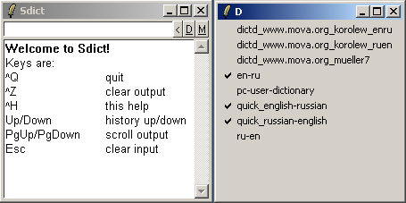
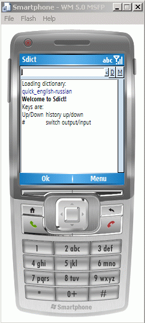

Sdict
What is Sdict?
Sdict is simple dictionary application, written in mind to be
small and portable. It support StarDict
dictionaries and can be run on different range OSes and platforms.
Requirements
There is only one requirement: Tcl/Tk distribution. By depend
of your operation system you need to install appropriate Tcl/Tk
distribution, inspect following sites:
Project page
To download latest Sdict version, please, go to
Download
section.
Also, you can find two small dictionary: Russian to English, English to Russian.
Screenshots
Windows XP, ActiveTcl 8.4:

Windows Mobile 5.0 (Smartphone Edititon) on Emulator, Evolane Tcl/Tk:
